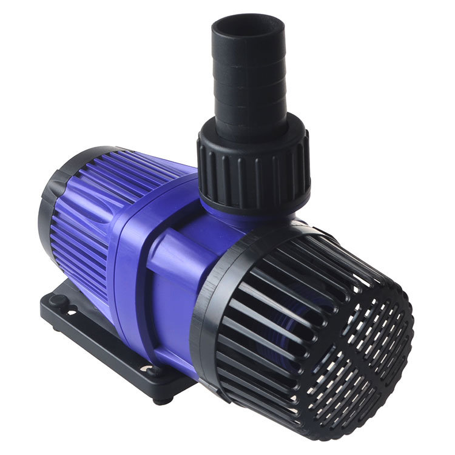
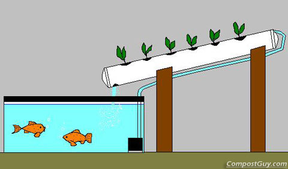

Seja bem-vindo ao guia prático da **Aquaponia Brasil**. Se você busca uma atividade que une sustentabilidade, produção de alimentos orgânicos e uma terapia relaxante para o dia a dia, você está no lugar certo.
 Um ecossistema equilibrado: peixes e plantas em harmonia.
Um ecossistema equilibrado: peixes e plantas em harmonia.
O conceito é simples: os peixes alimentam as plantas e as plantas limpam a água para os peixes. Para entender a ciência por trás disso, veja o que é aquaponia.
01. O Reservatório de Vida
Tudo começa com o Tanque de Peixes. Para iniciantes, caixas d'água atóxicas de 500 a 1000 litros são ideais. Elas oferecem volume suficiente para manter a estabilidade da água.

02. O Coração do Sistema (A Bomba)
A bomba de água é o componente mais crítico. Ela precisa funcionar 24 horas por dia para garantir a oxigenação. Nunca subestime este item: se a bomba parar, o sistema morre.
Aviso de Engenharia: Sempre tenha uma bomba de reserva. Falhas acontecem, e ter uma unidade extra pode salvar seus peixes em um final de semana.

Comece com os Equipamentos Certos
Recomendamos estes itens para quem está iniciando sua primeira montagem:


03. A Química Natural (Nitrificação)
Antes de colocar muitos peixes, seu sistema precisa passar pelo ciclo do nitrogênio. As bactérias benéficas transformarão a amônia em nutrientes para as plantas. Entender o ciclo biológico é o que diferencia o sucesso do fracasso.

04. Estrutura e Circulação
Seja com canos de PVC ou camas de cultivo, o importante é o fluxo. A água deve subir por pressão da bomba e retornar por gravidade, criando um ciclo de renovação constante.

Muito da aquaponia é improviso, teste e persistência. Não existe um modelo 100% definitivo, mas o aprendizado constante é o que torna este hobby tão prazeroso.
Pronto para mergulhar mais fundo? O próximo passo é entender como manter seu ambiente seguro e produtivo.